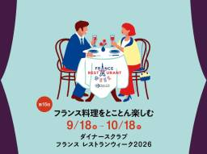

Creca-Style
https://gold-ax.hatenablog.jp/
ホテル、旅行、マイル、アメックスのクレジットカードなど体験談をご紹介します。＜クレカスタイル＞
フィード
アメックスプラチナに花柄・ミラー・幾何学の新デザイン誕生か？9月30日新発表の全貌、全種類・注意点まとめ 1
1
Creca-Style
アメックスプラチナが2026年9月30日の新発表を先行告知！花柄・ミラー・幾何学の新デザインが日本上陸か？
2日前

ダイナースクラブ フランス レストランウィーク2026｜料金・予約方法・会員特典・体験談・おすすめレストラン 1
Creca-Style
ダイナースクラブ フランス レストランウィーク2026のおすすめレストラン・料金・予約方法・会員特典を解説。全国の参加店舗や特別コース、実際に訪問したレストランの料理・サービス・体験談を写真とともに紹介します。
5日前
アメックスF1日本グランプリ2027｜限定チケットの値段・先行販売いつ・特別体験・宿泊プラン 1
Creca-Style
アメックスF1日本グランプリ2027のチケットの値段・先行販売はいつ？限定チケットのパドッククラブや指定席・西エリア、特別体験、宿泊プランまで詳しく紹介します。
6日前

楽天カード10,000ポイントもらえるのいつ？ 【9/28 10時まで】条件、もらい方、もらえない、確認方法を解説
Creca-Style
次の楽天カード10,000ポイントもらえるのはいつ？ 楽天カードでは、過去に新規入会とカード利用で合計10,000ポイントがもらえるキャンペーンを実施しています。 ※上記は、私が2025年に申し込んだ「ドラゴンボール 孫悟空」限定デザインです。現在は発行停止 2026年9月18日（金）10:00～2026年9月28日（月）10:00に、楽天カードの新規入会と利用で10,000ポイント、さらに楽天モバイルへの初めての申し込みで20,000ポイント、最大合計30,000ポイントがもらえるキャンペーンが実施中です。 さらに、今回はU25限定キャンペーンとして、楽天カードを作って楽天ペイアプリで支払い…
9日前
TOHO-ONEセゾンカード入会キャンペーン｜最大4,000円相当！キャッシュバックとギフトカードの条件を解説
Creca-Style
TOHO-ONEセゾンカードの入会キャンペーンを解説。新規入会と利用で最大2,000円キャッシュバックに加え、条件達成でTOHOシネマズ ギフトカード2,000円分をプレゼント。実質年会費無料で映画がおトクになる特典も紹介します。
9日前
TOHO-ONEセゾンカードの評判と6つの特長！年1回利用で年会費無料。最大4,000円還元と1,200円鑑賞の裏ワザ【2026最新】
Creca-Style
「映画1本2,000円は高すぎる…」そう感じている映画ファンに嬉しいニュースです。 2026年3月3日、TOHOシネマズの新たな相棒「TOHO-ONEセゾンカード」がついに始動しました。 実は私も大の映画好きで、これまでずっと「旧シネマイレージカード」を愛用してきました。 「6本観たら1回無料」というあのスタンプの恩恵を何度も受けてきた一人で、まだ数回の無料観賞分が残っています。 だからこそ、今回のリニューアルが「本当にお得なのか？」「これまでのスタンプはどうなるのか？」と、誰よりも厳しくチェックしました。 結論から言うと、この「TOHO-ONEセゾンカード」への進化は、映画を観れば観るほど、…
10日前
【2026年最新】セゾンアメックス完全ガイド | 特典徹底比較！全種類一覧から損をしない1枚が見つかる選び方
Creca-Style
「アメックスのステータス」と「セゾンの利便性」をいいとこ取りしたセゾン・アメリカン・エキスプレス®・カード（通称：セゾンアメックス）。しかし、いざ作ろうと思っても「パール、ゴールド、プラチナ・・・どれが自分に合うの？」「年会費の元は取れる？」と、種類が多くてどれを選べばいいか迷っていませんか？ 実は、セゾンアメックスは「ポイント重視」か「マイル重視」か、あるいは「普段の買い物」か「旅行」かによって、正解が全く異なります。さらに、映画やエンタメを心ゆくまで楽しみたい方には、新たに「TOHO-ONEセゾンカード」という強力な選択肢も加わりました。 私自身も、実際に「セゾンプラチナ・ビジネス・アメッ…
10日前
セゾンプラチナビジネスアメックスの特典・メリット・審査を専門家が徹底解説【完全ガイド】
Creca-Style
「JALマイルを最速で貯め、ビジネスもプライベートも最高峰の環境で整えたい。」 そんな経営者の期待に20年以上応え続けてきたのが、セゾンプラチナ・ビジネス・アメリカン・エキスプレス・カードです。 私は2005年10月に新しく誕生したセンチュリオン（百人隊長）のカードデザインが採用されていない時代のセゾンプラチナアメックスから知っています。 その経験から断言します。このカードは今、ビジネス用1枚の年会費だけで「プライベート用プラチナ」も永年無料（通常33,000円税込）で持てる※1という、他社ではあり得ない合理性を備えています。※1：申し込み条件があります。 つまり、プラチナカード1枚あたりのコ…
10日前
マリオットボンヴォイ グローバルプロモーション2026 Q3 | 2泊で最大4,500ポイント
Creca-Style
マリオットボンヴォイ2026年Q3グローバルプロモーションを解説。2泊で1,500ポイント、リゾートなら最大4,500ポイントの獲得条件、おすすめホテル、プラチナチャレンジとの併用方法まで紹介。
12日前
ANAアメックスゴールドとプレミアムを徹底比較！どっちがお得？損益分岐点と違いを解説
Creca-Style
新しいANAアメックスゴールドとANAアメックスプレミアムはどっちがお得？年会費、利用ボーナスマイル、ANA利用、ダイニングキャッシュバック、旅行・ホテル特典などを比較し、年間利用額別の損益分岐点から得する人・損する人を解説します。
16日前
アメックス、紅葉の高台寺 2026 特別観賞 Only for Amex！紅葉ライトアップとプロジェクションマッピング
Creca-Style
アメックス高台寺2026｜紅葉の特別鑑賞 Only for Amexの開催日・2つのプラン・アメックスプラチナの優先先着受付、紅葉ライトアップや京舞、プロジェクションマッピングなどを紹介します。
20日前
アメックス、清水寺の夜間特別拝観に参加！完全貸切で清水寺の本堂内陣（国宝）、西門や三重塔、経堂、朝倉堂の特別公開
Creca-Style
アメリカンエキスプレスの恒例行事、世界遺産清水寺の夜間特別拝観として「世界遺産 清水寺 2026 秋の貸切ナイトビューイング Only for Amex」が毎年開催されています。 アメックスのイベント「知新の扉 清水寺の夜間特別拝観」は私も実際に参加したので写真と共にご紹介します。 2017年開催から毎年10月中旬の開催でしたが、2022年から11月中旬の紅葉が楽しめる時期に開催となりました。 2026年のアメックス 清水寺夜間特別拝観は、合計3,000名という限られた人数で楽します。 アメリカン・エキスプレス会員のために清水寺の境内を貸し切る「秋の夜間特別拝観」を楽しみにされている方も多くい…
21日前
【2026最新】アメックス、ユニバーサル・スタジオ・ジャパン特典。USJ貸切ナイトに参加、ブログでご紹介、VIPツアー、エクスプレスパスプレミアム、スーパーニンテンドーワールド ドンキーコング入場抽選
Creca-Style
アメックスUSJ貸切ナイトの最新情報を解説。開催日、申込方法、参加費、アメックスプラチナ先行受付などを紹介。サマーナイト、ウィンターナイト、プレミアムナイトなどの開催情報をまとめています。
21日前
ANAアメックスでPOWER LOUNGE PREMIUMが無料｜羽田空港第2ターミナル国際線の利用条件・場所・営業時間を解説
Creca-Style
ANAアメックスゴールドとANAアメックスプレミアムで羽田空港第2ターミナル国際線のPOWER LOUNGE PREMIUMを利用可能。同伴者1名無料、場所や営業時間、サービスを解説します。
22日前
【9月 24.2万】ANAアメックス入会キャンペーン一覧比較！合計242,000マイル相当 ANAアメックスカード、ANAアメックスゴールド、ANAアメックスプレミアム
Creca-Style
ANAアメックス入会キャンペーンが2026年9月2日(水) 13時からリニューアル！ 3券種の入会特典を比較してご紹介します。 2026年9月2日以降の新規入会キャンペーンでは、ANAアメックスプレミアムが合計242,000マイル相当、ANAアメックスゴールドが合計128,000マイル相当、ANAアメックス（一般）が合計38,000マイル相当を獲得できます。 3券種それぞれで入会特典や獲得条件が異なるため、カードの利用スタイルや目的に合わせて選ぶことが重要です。 なお、2026年9月2日 13時より前に入会した場合は、9月1日までの旧入会キャンペーンが適用されるのでご注意ください。 9月2日 …
25日前
【2026最新】ANAアメックスプレミアムカードの特典すべて、メリット・デメリット、マイル、空港ラウンジ、年会費 ANAカード最上位
Creca-Style
ANAアメリカン・エキスプレス・プレミアム・カード（以下、ANAアメックスプレミアムカード）は、ANAカード最上級でANAグループ便のフライトで大きくマイルが貯まる最強ANAカードと言えるでしょう！ また、フライトごとに多くの特典が受けられるため、国内・海外旅行で威力を発揮します。 ANAアメックスプレミアムカード会員は、国内・海外旅行や出張でANA（全日空）の飛行機をご利用で、羽田空港 第2ターミナルのPOWER LOUNGE PREMIUM（国際線）が同伴者1名と共に無料、国内線でANAラウンジが無料、ANA航空券購入で100円＝4.5マイル相当付与、国際線でビジネスクラスチェックインカウ…
25日前
【2026最新】ANAアメックスゴールドカードの驚きの特典を使ってみた！メリット・デメリット、年会費、ポイント・マイル、空港ラウンジ 、プライオリティパス
Creca-Style
ANAアメリカン・エキスプレス・ゴールド・カード（以下、ANAアメックスゴールドカード）はANAグループ便のフライトで大きくマイルが貯まります。 僕もANAアメックスゴールドSFCを持っていて、特典、メリット・デメリット、持つ価値などの体験談をご紹介します。 ANAグループ便に多く搭乗するなら断然、ANAアメックスゴールドカードをオススメします。 ANA SFC修行は、ANAの航空券の購入で100円＝3マイル相当貯まり、それをANA SKYコインに交換して航空券購入に充当することで現金の出費が少なくなります。 また、大きく貯めたマイルを特典航空券に交換で海外旅行に行けちゃいます。 2022年9…
25日前
【2026最新】ANAアメックスカードの特典、メリット・デメリット、ポイント・マイル、空港ラウンジ ANAアメックスの評判
Creca-Style
ANAアメリカン・エキスプレス・カード（以下、ANAアメックスカード）は大きくマイルを貯めることができます。 ANAアメックスカードはANAグループ便の搭乗で100円＝1.5マイル相当（通常の1.5倍）、ANAカードマイルプラス店なら通常ポイントの他、別途100円＝1マイルと大きくマイルが貯まるメリットがあります。 さらにANAグループ便に搭乗で区間ボーナスマイルが10％もらえるなど、マイルに特化したANAアメリカン・エキスプレス・カードは多くの特典が魅力的ですね。 僕はANA SFC（スーパーフライヤーズ）会員なのですが、SFCはANAアメックスゴールドスーパーフライヤーズ（SFC）を使って…
25日前
【2026年9月】アメックス入会キャンペーン比較一覧すべて紹介！初年度年会費無料相当、過去最大級のボーナスポイント獲得のチャンス
Creca-Style
アメックスのクレジットカードの新規ご入会キャンペーンを比較一覧ですべてご紹介します。 ■個人用のアメックスのセンチュリオンライン3券種の入会キャンペーン アメックスグリーンカードは合計36,100円相当 アメックスゴールドプリファードカードは合計120,000円相当 アメックスプラチナカードは合計325,000円相当 ▶アメックスプラチナ 入会キャンペーン ■仕事用のアメックスのセンチュリオンライン3券種の入会キャンペーン アメックスビジネスグリーンカードは合計60,000円相当 アメックスビジネスゴールドカードは合計170,000円相当 アメックスビジネスプラチナカードは合計260,000円…
25日前
改悪？改善？ANAアメックスの利用ボーナスマイルとは？ゴールド・プレミアムの達成条件と獲得マイルを解説。ANA SKY コイン獲得プログラムと違いを比較
Creca-Style
ANAアメックス ゴールド・プレミアムの「利用ボーナスマイル」を徹底解説。年間400万・600万円利用時の達成条件（15,000/30,000マイル獲得）や従来のANA SKY コイン獲得プログラムとの違い、マイルの価値まで分かりやすく紹介します。
1ヶ月前
ANAアメックスのダイニングキャッシュバックで最大4万円還元｜20％還元・対象店・利用条件を徹底解説！
Creca-Style
ANAアメックス ゴールドとプレミアムのダイニングキャッシュバックを徹底解説。特典内容や年間上限、対象店舗、利用条件、登録方法、使い方まで詳しく紹介します。
1ヶ月前
ANAアメックスが17年ぶりのリニューアル！2026年9月2日から新券面・3つの新特典・年会費を改定
Creca-Style
ANAアメックスが2026年9月2日にリニューアル。新しい券面、年会費、特典、ボーナスマイル特典などの変更点を比較し、何が変わるのかを詳しく解説します。
1ヶ月前
アメックスプラチナのホテル特典が凄すぎる！ホテル無料宿泊、上級会員付帯、アップグレードなど盛りだくさん
Creca-Style
アメリカン・エキスプレス・プラチナ・カード（以下、アメックスプラチナカード）にはホテルに関連する特典・サービスが多く付帯しています。 「フリー・ステイ・ギフト」「ファイン・ホテル・アンド・リゾート」「ザ・ホテル・コレクション」「ホテル・メンバー・シップ」など、日常ではなかかな体験することのできないアメージングなホテル体験が可能となっています。 私はたまにザ・リッツ・カールトン東京に泊まるのですが、直接電話で空室を確認するとアメックスプラチナ、アメックスセンチュリオン会員限定の「ファイン・ホテル・アンド・リゾート」のプランを勧められます。 アーリーチェックン、レイトチェックアウト、朝食無料、ホテ…
1ヶ月前
【沖縄初】シティエクスプレス by マリオット沖縄那覇が2027年春開業！那覇東急REIホテルをリブランドか？立地・特徴まとめ
Creca-Style
マリオットインターナショナルは2026年8月24日、沖縄県那覇市にシティエクスプレス by マリオット沖縄那覇を2027年春に開業すると発表しました。 ホテルブランドとして沖縄初進出となります。 また、マリオットとして、初めて那覇市内にホテルを開業します。 那覇市内のどこ？ 那覇東急REIホテル（沖縄県那覇市旭町）を改装したリブランド開業である可能性が極めて高いと考えています。 シティエクスプレス by マリオット沖縄那覇は、ゆいレール旭橋駅直結、那覇バスターミナル前、国際通りや県庁も徒歩圏内という抜群の立地を誇り、Marriott Bonvoy会員待望の那覇拠点誕生となります。 マリオットと…
1ヶ月前
【2026最新】アメックスグリーンの月会費は高い？特典で「元を取れる人」と「損する人」の決定的な違い
Creca-Style
アメックスグリーン（月会費制）は本当に持つ価値があるのか？月額1,100円で受けられる充実のプロテクションやトラベル特典、ポイントの貯め方を実体験を交えてレビュー。ステータス性だけじゃない、コストパフォーマンスの真実を教えます。
1ヶ月前
【9月 3.6万】アメックスグリーン入会キャンペーン！還元率3.5％以上可能。約2年8か月分の月会費が無料に相当！初月無料＆最大36,100円相当ポイントもらえる
Creca-Style
お得なアメックスグリーンの入会キャンペーンが実施中です。 初月の月会費1,100円無料＆合計35,000円相当ポイントで、32ヶ月（2年8月ヶ月分）の月会費無料に相当！ ▶アメックスグリーン 入会キャンペーン ※加盟店によりポイント付与時期が異なるため、早めのご利用をおすすめします。 ※通常ポイントの加算時期は、グリーン・オファーズ™ カードご利用ボーナス加盟店でのカード利用タイミングにより異なります。 ※上記の画像は過去に私が使用していたアメックスグリーンの券面です。2026年8月19日(水)以降はナンバーレスで発行となっています。Valid Thru（有効期限）のエンボスもありません。 ご…
1ヶ月前
アメックスがナンバーレス化へカード券面を仕様改定！【2026年8月19日】グリーンやゴールドなど変更スケジュールと発行時期を解説
Creca-Style
アメックスがナンバーレス化へ券面仕様改定！2026年8月19日よりカード番号が表面から裏面へ移動します。グリーンやゴールド、ビジネスカードなど対象カードや切り替えスケジュール、一部自動精算機での注意点を分かりやすく解説します。
1ヶ月前
アメックスプラチナのエアライン・クレジット10万円分もらい方・使い方・確認方法、年間500万円の利用条件を徹底解説【2026年7月改定】
Creca-Style
アメックスプラチナのエアライン・クレジットを徹底解説。10万円分の進呈条件、年間500万円の利用条件、海外航空券30万円以上などの利用条件、使い方や注意点を詳しく紹介。旧トラベルクレジットとの違いも解説します。
1ヶ月前
マリオットボンヴォイ ポイント購入セール攻略！40%増量【2026年9月9日まで】ポイント購入方法、30日ルール、マリオットボンヴォイアメックスお得
Creca-Style
マリオットボンヴォイのポイント購入セール 2026年 Q3が日本時間の2026年8月4日22時から2026年9月10日12時59分まで実施中です。 今回は、2,000ポイント以上の購入で30%、40,000ポイント以上の購入で40%ボーナスがもらえます！ ポイント購入セールの期間ですが、米国東部時間が基準となっており、日本時間は2026年9月9日までと考えておきましょう。 今回もミステリーボーナスポイントで開催となります。 ポイント購入セールで大きくポイントを購入して、次の旅に繋げましょう。 マリオットボンヴォイのポテンシャルを使い倒し、コストを上回るリターンを確実に得るための全ノウハウは「マ…
2ヶ月前
【9月 10万】マリオットアメックス入会キャンペーンご紹介 | 年会費無料相当ポイントもらい方、条件
Creca-Style
マリオットボンヴォイアメックス入会キャンペーンがスタートしました！ マリオットボンヴォイアメックスプレミアムカードは合計100,000ポイント、マリオットボンヴォイアメックスカードは合計55,000ポイントが獲得が可能です。 獲得したポイントをマリオットボンヴォイホテルの無料宿泊に交換をすると、初年度 年会費無料に相当する価値になります。 ■マリオットボンヴォイアメックスカードの特長 ゴールドエリート自動付帯により客室のアップグレードや14時レイトチェックアウト（当日の空室状況による）など、年間250万円以上の利用で無料宿泊特典 2025年8月21日、新しくマリオットボンヴォイアメックスプレミ…
2ヶ月前